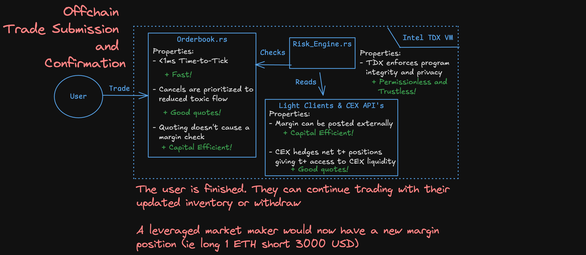
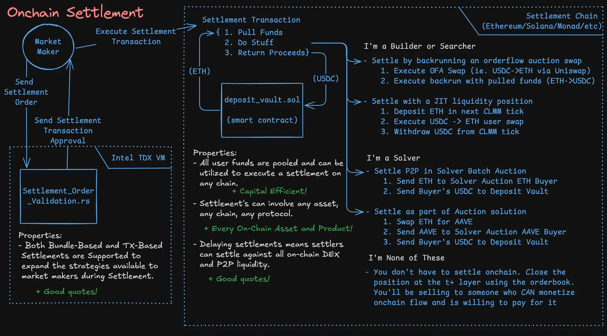

This architecture optimizes trading conditions (speed, privacy, capital efficiency) while maintaining maximum flexibility on where/when/how market makers hedge or settle exposure - optimizing liquidity and asset availability.
How It Works
Depositing
Users can deposit into Tplus by depositing into our deposit vault smart contracts on any chain we support.
Trade Execution
When a user submits an order to Tplus:
- The order hits an offchain orderbook running in a TEE
- Your inventory is updated - leverage trades update margin positions, spot trades update balances. Spot and leverage trading occurs in the same book.
- The user can withdraw or keep trading

Exposure Settlement
Leveraged exposure can be cleared in whatever way is preferable:
- Into any onchain DEX (Uniswap, Raydium, etc.)
- Internally against another Tplus participant
- Can be held if leverage exposure is desirable for a directional position
- Offset with a hedge on a cross-margined external venue
- As part of a larger strategy (solver batch, block builder bundle, arbitrage leg)

More Exchange Details
Interest Rates
Tplus' Matched Book Margin Engine targets matched margin exposure (equal quantity of long and short). Matched exposure is lower risk as it can be ADL'd, whereas non-matched exposure must be liquidated into new or external liquidity and draws down underlying deposits (like an Aave borrow).
To manage this, Tplus uses a funding rate with two components — skew and premium — as well as a borrow rate:
- Skew Component — A function of Tplus' exposure imbalance. If Tplus has net long margin exposure (more longs than shorts), longs pay shorts — vice versa if net short. This incentivizes opening underweight-side or closing overweight-side leverage positions, reducing platform skew and risk.
- Premium Component — Rarely manifests. Works like standard funding rates — if the market is trading at a premium longs pay shorts, vice versa at a discount. Incentivizes cross-side leverage flow to re-balance exposure.
- Borrow Rate — Charged on leverage positions based on utilization of underlying assets (borrows open relative to vault deposits). Primarily incentivizes new deposits. Charged hourly, paid out continuously to depositors.
Borrow rates are typically insignificant compared to funding rates — matched-book margin allows liabilities to originate against cross-side positions without requiring a corresponding deposit. We might have 10 ETH deposits and 100 ETH liabilities because 90% of the ETH leverage is funded by cross-side positions.
Long-Tail Assets
Up to this point we've spoken a lot about how solvers can quote over onchain liquidity, fill on margin, and settle the exposure into the onchain liquidity they're quoting over.
This isn't viable for long-tail assets as:
- we can't safely offer any margin for them - and
- holding exposure to them for even 400ms is risky
As a result we offer a feature called Synchronous Making for these assets - we allow makers to place synchronous quotes where an associated match is not finalized until an associated onchain interaction settling the exposure is finalized onchain. We effectively become a fast RFQ for long-tail assets.
It's worth noting that quotes in these markets have a minimum fill rate requirement. If too many trades revert due to failed settlements the market maker will be offboarded and no longer allowed to synchronously quote.
Risk
Tplus is a leveraged system, our risk is managed the same way most other leveraged systems manage it - mainly:
- Caps on cross-margining and asset deposits
- Interest rates to manage liquidity and exposure skew
- A limited set of assets can be used as collateral - Assets that are supported as collateral have:
- Caps on open interest based on asset liquidity
- Maintenance and Initial margin haircuts based on price and liquidity volatility - IM haircuts move up as exposure skew increases
- Cross-margin support is limited to majors
A more detailed overview of our risk and liquidation mechanisms:
In addition - we did a quick thought experiment of how Tplus would have reacted to the 10/10 liquidation cascade which you may find interesting:
Note that our timeline of events is based on what we observed, and thus an educated guess
Asset Fungibility
Some assets will need to be treated as fungible in T+. This is necessary for our external liquidity composability to be most useful.
- ETH deposited on Arbitrum, Base, or Mainnet are all considered ETH
- USDC and USDT are considered USD
- BTC wrappers like cbBTC and wBTC are considered BTC
- In-kind tokenized equities are treated as fungible (depending on issuer risks)
This means you can deposit an asset on one network, and withdraw a different token that Tplus considers fungible with the first on another network. Deposit caps and rate limits manage security concerns here.
Rebalancing
Flow and deposit/withdrawal imbalances can lead to Tplus having imbalanced distributions of fungible assets across chains. To control this, we incentivize cross-chain solvers to control asset distributions using deposit/withdrawal fees/rewards.
Each chain has a target weighting for a given asset based on the available liquidity. For instance, targets on USDC might look like:
- 20% Ethereum
- 20% Solana
- 10% Base
- 10% Arbitrum
- ... etc.
Actions that cause imbalances are charged a fee, actions that re-balance things receive a reward.
Security
We refer to TEEs pretty frequently as a handwave for being trustless and decentralized — which isn't fair as they are neither by themselves. Our actual security model uses a tiered approach.
Trustlessness
TEEs are trustless as long as they cannot be physically exploited. Physical exploits require gaining access to the server in a secure data center for an extended period to analyze memory access patterns. We only allow allowlisted operators hosting in secure data centers.
We categorize system components by risk level:
Low Risk Components (orderbook, OMS, interest rate engine) — Rely on the TEE for security but have no power to mutate critical state or authorize critical actions. All state mutations are merely proposed and re-validated by the clearing engine before being applied. An attack would be easily observable and low reward. Users can quickly switch to a new replica hosted by a different operator. These components can receive frequent software upgrades from governance.
High Risk Components (clearing engine, oracle) — Rely on MPC as well as TEEs. Any attack would have to compromise the majority of clearing engine nodes — nearly impossible with frequent server and key rotations plus geographic distribution. Software upgrades require lengthy timelocks, audits, and a much broader governance process.
Decentralization
For a system to be decentralized it must be censorship resistant and trustless. The same tiered approach applies:
Low Risk components — Single host that could theoretically censor. Mitigated by dstack, a replicatable confidential VM framework that allows anyone to spin up their own version. If someone's censoring — switch to a new operator.
High Risk components — Multiple hosts with rotating network leader. Every node would have to be censoring to truly deny access.
Improved Orderflow Monetization
Finally, we want to briefly touch on some of Tplus's unique use cases - mainly in the area of monetizing orderflow.
Allowing external settlement of leverage exposure allows for new kinds of orderflow monetization since the market maker gets to dictate where and when the settlement of filled orderflow occurs. This effectively gives market makers on-demand private liquidity or orderflow.
Solver Vertical Integrations
Solvers can improve their base chain efficiency by settling their Tplus inventory strategically to optimize for peer-to-peer settlement on the base chain. This allows them to create more efficient solutions than competitors since they have access to exclusive P2P liquidity, and also allows them to avoid contentious state in times of high volatility.
Block Builder Vertical Integrations
Builders can strategically settle Tplus inventory via private bundles in their blocks to attempt to increase the value of their blocks relative to competitors, giving them an edge in blockbuilder auctions. This is particularly useful for builders with searcher and intent-based ofa integrations.
- Searcher Builder Strategy - Builders who are also searching can utilize Tplus as on-demand private liquidity that allows them to skip unprofitable legs in arbitrage bundles.
- OFA Builder Strategy - Intent based orderflow auctions that utilize builders look quite similar to solver interactions. They send a swap request to the ofa and builders bid on the trade based on who can provide the best solution. Using Tplus settlements as on-demand private liquidity not only allows the builder to provide more efficient solutions, it also allows them to avoid paying priority fees when there's high contention over a pool. This strategy is also relevant for non-intent-based OFAs which sell the right to backrun the user's trade.
- GWEI Packing Strategy - Builders who have unsettled trades in a variety of assets can choose to settle them all at once intermittently in a block they really want to win, increasing the base value of their block relative to competitors.
Ethereum block builders compete to capture CEX:DEX arbitrage opportunities. Capturing private opportunities is important to remaining competitive as it allows builders to build slightly more valuable blocks than their competitors. Tplus giving access to these opportunities on-demand makes it an excellent tool for increasing your edge in auctions.
Integration
API Access
Tplus offers a high-performance WebSocket API for:
- Order submission and cancellation
- Real-time fills and position updates
- Settlement transaction construction and submission
Quoting operations (post-only orders, cancels) are prioritized in the matching engine.
API aligns with Binance pattern. We also plan to support FIX gateways.
Settlement Transactions
Settlements are constructed as bundles or single transactions depending on your strategy:
- TX-based: Standard transaction, works with any RPC
- Bundle-based: Bundles validated by tplus and sent directly to titan or buildernet
The TEE validates your settlement transaction against your margin position before signing an approval. Invalid settlements (wrong amounts, wrong assets) are rejected.
Cross-Margin Setup
To use external accounts as collateral:
- Provide your cross-margin credential directly to a cross-margin manager TEE. This ensures no other party can access your credential
- The margin engine polls your external positions
- Hedged positions are recognized; margin requirements adjust accordingly